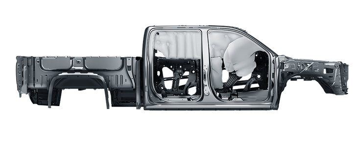

Safety in the Chevy Silverado is rated 9.2 stars out of 10. Moderate Overlap Front Test Results, Side
Impact Test Results, Rear Crash Protection Results, Roof Strength Test Results were all rated good. These
results come from the Insurance Institute for Highway Safety crash test ratings and the National Highway
Traffic Safety Administration safety ratings.
The only part that was rated 4 stars rather than 5 was the
rollover, but that may come expected with a larger vehicle. However, the Silverado is a very sturdy and
heavy vehicle making it mostly stable.
The Chevy Silverado has many safety features such as: Driver Air Bag,
Passenger Air Bag, Front Head Air Bag, Rear Head Air Bag, Front Side Air Bag, 4-Wheel ABS, 4-Wheel Disc Brakes,
Electronic Stability Control, Daytime Running Lights, Integrated Turn Signal, Mirrors Front, Tow Hooks, and
Traction Control.
